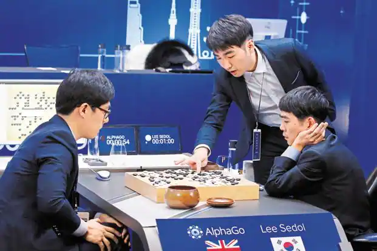

Super Mario Reinforcement Learning

Introduction
Super Mario Bros is legendary. Despite not playing it myself in my childhood, I grew up on it’s legacy. I had decided I was going to tackle a project with AI, wanting to challenge myself to learn about deep learning by doing it, but when deciding on a specific challenge, I wanted something to represent how this challenge with AI made me feel. Super Mario Bros. is that challenge. It feels monumental, unwavering and bold in status, despite being so simple, as if it, as a game, knew what it’s legacy would be.
It felt fitting, dare I say poetic, to choose this classic game with such a powerful status: it’s straightforward, yes, but conquering it with AI still presents a significant challenge, and, much like this game became larger than itself in a mega-universe of games and lore, this project feels like the beginning of my journey to learn and understand AI. You’ll see that I was not able to fully achieve what I wanted, but think of this project as a starting point and a symbol of all the bigger things to come, the first footsteps taken in search of a flagpole out in the infinite distance.
Project Overview
Unsupervised Learning
The framework we used for out AI is called unsupervised learning. It is a machine learning approach where the AI learns to achieve a task without a human-defined “optimal” solution or stragey. It is different from supervised learning, where we as the human trainer want the AI to learn to mimic some human behavior, like identifying handwritten digits or something. In supervised learning, the AI knows what the right answer is. It might have guessed that that weird looking squiggle was a 2, but it knows after its prediction that it was actually a 5.
Both supervised and unsupervised learning are useful for different tasks, but unsupervised learning is much more open-ended in nature, and in some ways more exciting. Without being chained to learn a strategy that humans might think is optimal, it’s free to explore the game and come up with its own idea of optimal strategy.
My favorite example of this comes from the game of Go and the AI that learned to master it, AlphaGo. Go is an ancient game, originating in east-asia. Wildly more complex than chess, humans have spent the last 2000 years developing what they thought was an “optimal strategy.” Enter AlphaGo, an unsupervised AI that taught itself to play Go, that learned completely unconventional, seemingly illogical strategy. It famously defeated the world’s best Go player, Lee Sedol, 4-1 in a highly publicized 5-game tournament. For anyone who hasn’t seen the documentary, I highly recommend it, of the same name: AlphaGo. But you should definitley finish reading this first.

Project Goals
Anyways, I am fascinated by that story and to me it represents the enormous potential of AI, of which I believe we are just dipping into the surface of right now. I wanted an AI that might teach me something, if it learns a better strategy for playing Super Mario Bros. With that, we set out two goals for this project:
- Train an AI to beat the first level of Super Mario Bros. better than me (SuperHuman).
- Train this AI in such a way that it is able to develop a general strategy—i.e. if you were to drop it in a new unseen level, it would be able to beat it.
Methodology
Mathematical Theory of Reinforcement Learning
Before diving into the implementation of our AI, our team dedicated significant time to understand the mathematical foundations of reinforcement learning algorithms. This foundational knowledge was crucial to understanding how to implement our model in code.
At its core, reinforcement learning involves an agent that learns to make sequential decisions by interacting with an environment. The agent is in a constant cycle of performing an action, receiving rewards or penalties from that action, then picking a new action and repeating. Over time the AI learns to take actions that maximize its rewards. The key concepts include:
- Agent: The learner or decision-maker, the AI ‘Player’ in this context.
- Environment: Everything external the agent interacts with, in this case the stage or level.
- State (\(s\)): A representation of the current situation of the agent, i.e. his place in the enviroment.
- Action (\(a\)): A choice the agent can make.
- Reward (\(r\)): Feedback from the environment based on the action the agent has taken.
- Policy (\(\pi\)): A strategy that the agent employs to determine what actions to take based on states.
- Value Function (\(V(s)\)): The expected cumulative reward for being in state \(s\) and following a policy \(\pi\).
- Q-Value Function (\(Q(s, a)\)): The expected cumulative reward for taking action \(a\) in state \(s\) and following a policy \(\pi\).
So what we call learning for the AI is actually the agent finding a policy that maximizes its total expected reward, often referred to as the return. Here, the agent is guided by the Q-value function that it learns, which, very broadly, it uses to predict how much reward it expects to receive from taking actions in some state. It then chooses to take the action with the highest predicted reward, and that becomes it’s policy.
The fundamental algorithm here is Q-Learning, where the agent learns to approximate the true Q-value function iteratively using the Bellman equation:
\[ Q(s, a) \leftarrow Q(s, a) + \alpha \left( r + \gamma \max_{a'} Q(s', a') - Q(s, a) \right) \]
Where \(\alpha\) is the learning rate, \(\gamma\) is the discount factor, and \(s'\) and \(a’\) are the next state and action, respectively. This algorithm uses future rewards and some hyperparameters that we can tune to make updates to the Q-value function that make it better at predicting rewards.
The details of this function really aren’t important. The key takeaway is that we have a way to update our Q-value function to get better and better at predicting rewards for our agent, allowing it to make better choices about what action to take to get it closer to the flagpole.
A small caveat I will make right here is that we actually want to use a slightly more complicated equation since our model uses a neural network to approximate the Q-value function. The math here is extremely complicated and beyond me, but people smarter than me have shown that it is better to use this equation:
\[ Q(s, a) \leftarrow Q(s, a) + \alpha \left( r + \gamma Q_{\text{target}}(s', \arg\max_{a'} Q_{\text{online}}(s', a')) - Q_{\text{online}}(s, a) \right) \]
This approach mathematically stabilizes training by using a separate neural network to predict future rewards (called the target network) from the one that chooses actions for mario (the online network). This separation helps improve the accuracy and reliability of our AI agent’s learning process.
Implementation Framework
The implementation of this project in code follows this extremely helpful and detailed tutorial on youtube, from Sourish Kundu. This video was amazing, going over the theoretical math that I talked about above, and showing how to actually implement that theoretical framework in code.
The implementation involved setting up the environment with OpenAI’s Gym, designing the neural network architecture, and developing the training loop to iteratively update the Q-values and improve the agent’s performance. We made sure to adapt and expand upon the concepts introduced in the video to tailor the project to our specific goals and requirements.
Architecture
Our AI training framework for Super Mario Bros follows a structured and modular approach, integrating several key components necessary for the training process. The architecture includes the neural network, the agent-environment interaction, and various simplifications to streamline the learning process. Here’s an overview of the framework and key components:
Neural Network
The core of our implementation is the neural network that processes game frames and predicts the Q-values for possible actions. We used a Convolutional Neural Network (CNN) due to its effectiveness in extracting spatial features from images, crucial for understanding the game environment.
Convolutional Layers: These layers process input frames to detect features like edges, textures, and objects. By applying what are called convolutional filters, the network learns to recognize patterns such as enemies, obstacles, and movements within the game. Fully Connected Layers: After the convolutional layers, fully connected layers combine the extracted features and predict the Q-value rewards for each possible action. The final output layer provides the Q-values for the agent’s action choices, allowing the agent to select the action with the highest predicted rewards.
Training Algorithm
- Agent: The agent interacts with the game environment, making decisions based on the state of the game and updating its knowledge through the training algorithm.
- Epsilon-Greedy Policy: To balance exploration and exploitation, we used an epsilon-greedy approach. Initially, the agent is heavily biased to explore the environment by taking random actions (high epsilon), which will lead mario to try many new strategies at the beginning of training. As training progresses, epsilon decreases, and the agent increasingly exploits the policy it has learned up to this point by choosing actions with the highest predicted Q-values.
- Replay Buffer: The agent stores its experiences (state, action, reward, next state) in a replay buffer. This allows the network to learn from past experiences and break the correlation between consecutive states, leading to more stable training.
- Double Q-Learning: In the DDQN algorithm, we maintain two neural networks – the online network for selecting actions and the target network for evaluating them. Periodically updating the target network with the weights of the online network reduces overestimation and stabilizes learning.
Simplification Choices
To make the training process feasible and efficient, we incorporated several simplification choices:
- Preprocess Frames: We preprocess the game frames using wrappers to reduce computational complexity and simplify training. A
SkipFramewrapper reduces the frequency of updates by repeating the same action for a fixed number of frames. Frames are converted to grayscale to reduce the amount of data the network must process. They are resized to a smaller, standardized size (84x84 pixels) to decrease computational load. And finally, consecutive frames are stacked to provide temporal context, which helps the agent understand movement and changes in the environment. - Limited Action Space: We restricted the agent’s action space to a simplified set of actions (e.g., moving right, jumping) to focus on the essential movements needed to navigate the level. This reduces the complexity of the decision-making process and speeds up learning, though it does limit flexibility of the model as Mario is only allowed to perform movements that move him towards the flagpole.
- Reward Structure: The reward system incentivizes the agent to progress through the level by awarding positive rewards for moving right and penalizing it for standing still or dying. This straightforward reward structure guides the agent towards the main goal of completing the level.
By combining these components and simplification choices, our implementation effectively trains an AI agent to play and beat the first level of Super Mario Bros. The modular design allows for easy adjustments and extensions, making the framework versatile for various reinforcement learning tasks.
Results
The training process was very slow, due to the nature of unsupervised learning. Our AI agent faced a lot of challenges in training, initially making random decisions, and slowly but surely through training, finding a policy that worked. Initially, the model was very stupid. A big hurdle that we didn’t see coming were that the tall pipes were actually a big issue to jump over. These pipes require Mario to hold down the jump button for the maximum amount of time. With purely random button presses at the beginning of training, the chance of him holding jump for this long was evidently pretty unlikely. This would be no problem for a human player who can make the connection that the tall pipe requires a tall jump to get over it, but alas, the baby AI was not as capable.
But, through training, the AI was learning a strategy, and eventually, after almost 100 hours of training and 50,000 iterations, our AI agent was successfully beating the first level of Mario.
So, he’s still getting stuck on the pipe. But at least he is beating the level! So he’s not perfect. But there’s still a whole lot of improvement from that top video, so he is learning. He’s not perfect but I love him.
Reflections
This project was a pretty big undertaking for us. We faced several significant challenges throughout this project, which also provided valuable learning experiences. Our initial lack of experience with coding a reinforcement learning algorithm posed a steep learning curve. Additionally, training for this model was extremely computationally intensive, and we are all students who need to use our laptops for school, so there wasn’t as much training for the model as there could have been.
Looking back at our goals, we weren’t able to achieve everything we set out to. But, we were able to get Mario to successfully beat the first level! So that is definitely something, and honestly with how hard this project proved to be, I’m very happy with that.
This project significantly enhanced my skills in coding, reinforcement learning, and neural network architectures. I can say that I know so much more about deep reinforcement learning, coding neural networks, and working with APIs to interact with other interfaces.
Improvements to the Model
Training this model for longer would have a huge benefit, as it would allow Mario to become even better at understanding his environment and making decisions for actions to take. Right now, he is still seemingly doing erratic, random movements.
Additionally, the full move set would give Mario more flexibility in the choices he was making, though, it would take much more training time.
Conclusion
In this project, we successfully trained an AI agent to play and beat the first level of Super Mario Bros using a Double Deep Q-Network (DDQN) algorithm. This achievement showcases the power and potential of reinforcement learning, demonstrating how an agent can learn complex tasks through interaction with its environment and iterative improvement.
Summary
- Introduction to Reinforcement Learning: We began by grounding ourselves in the mathematical foundations of reinforcement learning, understanding key concepts like the Q-value function, Bellman equation, and the differences between supervised, unsupervised, and reinforcement learning.
- Implementation Framework: Our implementation was structured around a robust neural network architecture, leveraging convolutional layers to process game frames and fully connected layers to predict Q-values. The agent utilized an epsilon-greedy policy to balance exploration and exploitation, with experiences stored in a replay buffer to stabilize training.
- Challenges and Solutions: We navigated several challenges, including our initial lack of experience with coding advanced reinforcement learning algorithms, long training times, and diagnosing bugged code. Systematic debugging, incremental progress, and efficient use of computational resources were key to overcoming these hurdles.
- Skills Developed: This project significantly enhanced our coding proficiency, deepened our understanding of unsupervised machine learning, and provided practical experience in designing and optimizing neural network architectures.
- Training Process and Results: The agent’s performance improved over successive episodes, with increasing total rewards indicating effective learning. The final model, as showcased in the embedded video, successfully navigates the game level and reaches the goal, demonstrating the effectiveness of our approach.
Recommendations for Improvement
Given more time and resources, there are several ways to enhance this project further:
- Extended Training Time: Increasing the training duration and utilizing more powerful computational resources could further improve the agent’s performance and stability. Access to high-performance GPUs or cloud-based computing platforms would be beneficial.
- Algorithm Optimization: Exploring and implementing more advanced reinforcement learning algorithms, such as Proximal Policy Optimization (PPO) or Asynchronous Advantage Actor-Critic (A3C), could lead to better performance and more efficient learning.
- Hyperparameter Tuning: Conducting a thorough hyperparameter tuning process using techniques like grid search or Bayesian optimization could optimize the training process and improve the agent’s learning rate, discount factor, and exploration strategy.
- Environment Complexity: Expanding the complexity of the game environment by including additional levels or more dynamic elements could provide a more rigorous test of the agent’s capabilities and adaptability.
- Model Enhancements: Incorporating techniques like transfer learning, where the agent is pre-trained on simpler tasks before tackling the main game, could accelerate learning and improve performance. Additionally, using more sophisticated neural network architectures, such as deeper convolutional networks or recurrent neural networks, could enhance the agent’s ability to process and understand the game environment.
This project has been a valuable journey into the world of reinforcement learning, providing practical insights and demonstrating the potential of AI in solving complex tasks. With further improvements and optimizations, there is immense potential to push the boundaries of what our AI agent can achieve.
Thank you for following along with this journey. And thank you again to Sourish Kundu for his excellent video on training an unsupervised deep learning Mario AI. The link to the github for this project is here.